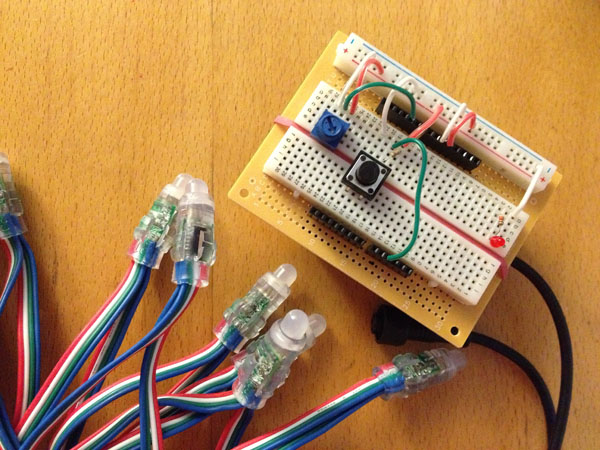
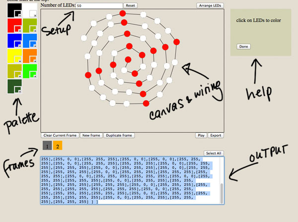
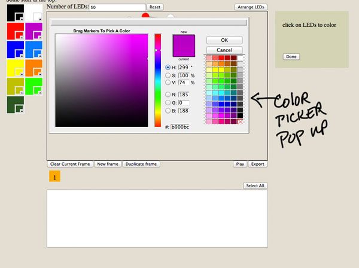

A Total Control Lighting prototyping helper
What is Total Control Lighting?
It is a string of LEDs for the Arduino prototyping platform. RGB color and
brightness can be individually set for each LED. To save on data pins, the LEDs are wired in series and a chip
attached to each LED forwards the color and brightness information to the next LED and so on. In this way one can
have dozens of LEDs individually controlled using only 2 data pins (plus power and ground).
Why would a helper be useful?
TCL strings are fun, but it can be a headache figuring out the indexes of each LED for a complicated lighting pattern.
It's pretty easy if the LEDs are laid out neatly in a grid, but what if you want to arrange your LEDs in a spiral or
other pattern, or attach them to a 3d structure that isn't flat?
My helper will display a canvas where the user can drag a string of LEDs to an arbitrary position (with lines drawn
between them to show the wiring) and then go in and change the colors of each LED. There will be support for simple
animations by allowing the user to generate a series of frames. When the user is done, the helper will output an
array of values that can be cut and pasted into an Arduino sketch.
Workflow and supported operations
- Create the wiring diagram
- User will be able to enter the number of LEDs in the string
- LEDs can be positioned by dragging them on the canvas.
- For ease of use I will also support a "quick click" mode where the user can simply click on the canvas to place
LEDs.
- Color the LEDs
- There will be a palette where users can choose colors and drag them onto the LEDs.
- The palette colors can be customized with a color picker.
- As a convenience a "clear frame" button will be provided to allow the user to clear all the LEDs at once and start
over.
- Support simple animations
- The tool will support simple animation by providing a list of frames. All frames will share the same wiring but have
different colors on the LEDs
- Users can click on a frame to view and edit it.
- Users will be able to add, duplicate and delete frames.
- Users will be able to reorder frames by dragging and dropping.
- A "play" button will be provided that will play the stored sequence of frames.
- Export the colors
- The tool will output all frames as an array of array of colors. This array will be presented in proper C++ syntax so
that it can be cut and pasted directly into an Arduino sketch.
- As a convenience a "select all" button will be provided to select all the output.
Arduino and TCL string

Interface

Interface showing color picker pop-up

Related Sites
- http://www.diagram.ly/
- An online diagram creator. Users can drag simple shapes and text onto a diagram and export or print
it.
- Circuit Lab
- Another online diagram creator specialized for electronic circuits.
- Kuler
- Color Wizard
- Color Scheme Designer
- All tools to help generate and preview color palettes.